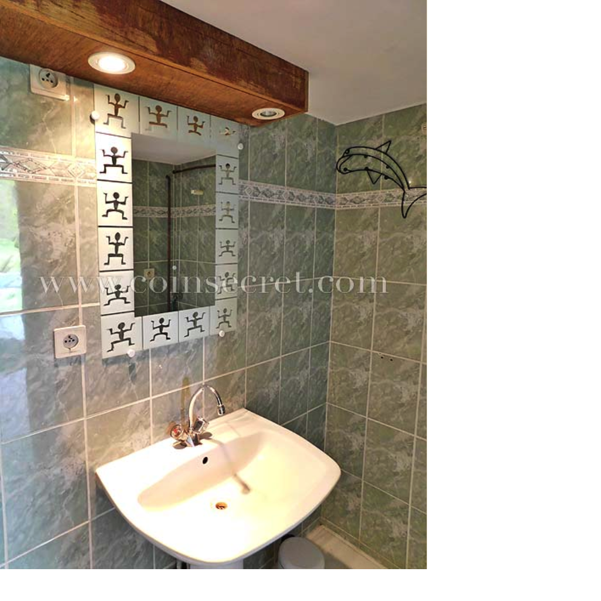

Les maisons des vacances réussies
Nos logements
Nos régions
Thèmes
Equipements
Louez votre maison
Nouveautés
Promotions
le blog
Maison en pierre spacieuse et lumineuse, de restauration récente, tout confort pour 8 personnes avec piscine privée chauffée et un grand pool house couvert. D'une superficie de 180m², la maison propose : Entrée : Indépendante comprenant un porte-manteau, un meuble bas. Cuisine : Poutres apparentes blanchies. Un grand placard mural de rangement, une table haute avec deux tabourets, un réfrigérateur congélateur américain, un plan de travail en U avec un évier deux bacs. Un four électrique, 3 feux à induction et 2 feux gaz avec hotte aspirante. Un Micro-ondes, un ensemble petit déjeuner (grille-pain, bouilloire, cafetière électrique et Senséo). Porte vitrée accès terrasse privative. Deux marches : Pièce à vivre, lumineuse poutres apparentes blanchies Espace salle à manger : une table avec 10 chaises à hauts dossiers. Un buffet bas. Une fontaine en pierre avec œil de bœuf. Une baie vitrée donnant sur une seconde terrasse privative Espace salon : deux canapés trois places, 2 fauteuils, 3 tables basses gigognes, une cheminée avec foyer ouvert utilisable, un écran plat. Une double porte vitrée accès extérieur. Buanderie : un lave linge, une vasque, étagères de rangement Espace nuit : Avec un grand seuil comprenant deux fauteuils, une table basse. Chambre 1 : un lit en 140 avec rangement et penderie. Un fauteuil. Salle de bain : une baignoire, deux vasques, rangements bas. Chambre 2 : un lit en 160, rangement penderie, un fauteuil. Chambre 3 : deux lits en 90, un rangement et penderie. WC : indépendant avec une vasque et miroir. En rez-de-jardin - passage par les extérieurs - pas de communication via l'intérieur : Chambre 4 : un lit en 160 avec une armoire rangement plat et penderie. Double porte vitrée vue piscine Un salon indépendant : un canapé une table basse, un écran plat. Salle d’eau : une douche, une vasque, un WC. Les Extérieurs : Un grand parc arboré et de grands espaces engazonnés, une belle vue surplombant la campagne. Terrasse privative avec mobilier extérieur attenante à la cuisine sous une pergola poutres apparentes. Terrasse privative bois avec mobilier extérieur et parasol, barbecue en pierres attenante au salon. Large coursive en béton autour de la maison. Pool house couvert avec mobilier extérieur salon et tables basse, bar haut, réfrigérateur, écran plat et un Baby-foot. Piscine chauffée, sécurisée par une alarme plongeante, plage bois et moquette synthétique, transats. Parking privé stationnement facile et spacieux.
|
|
|  | |
CARACTERISTIQUES
|
EQUIPEMENTS INTERIEURS
|
EQUIPEMENTS EXTERIEURS ET DE LOISIRS
|
PISCINE
|
INFORMATIONS DIVERSES
|
|